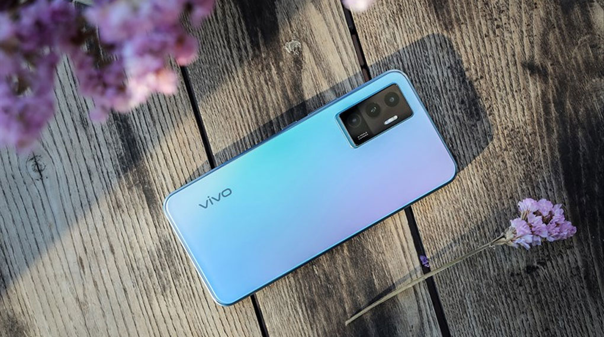
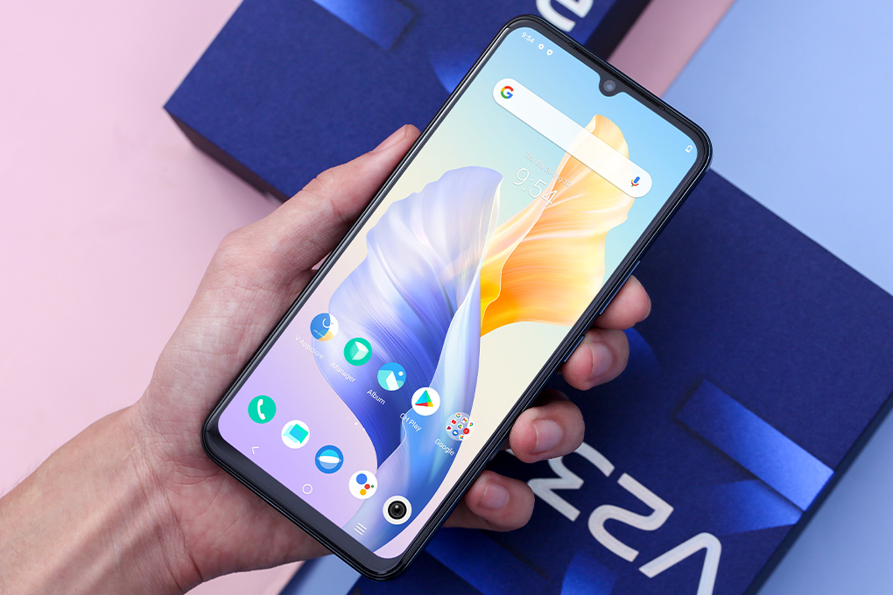
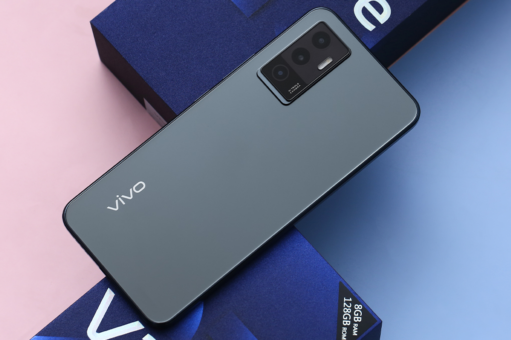
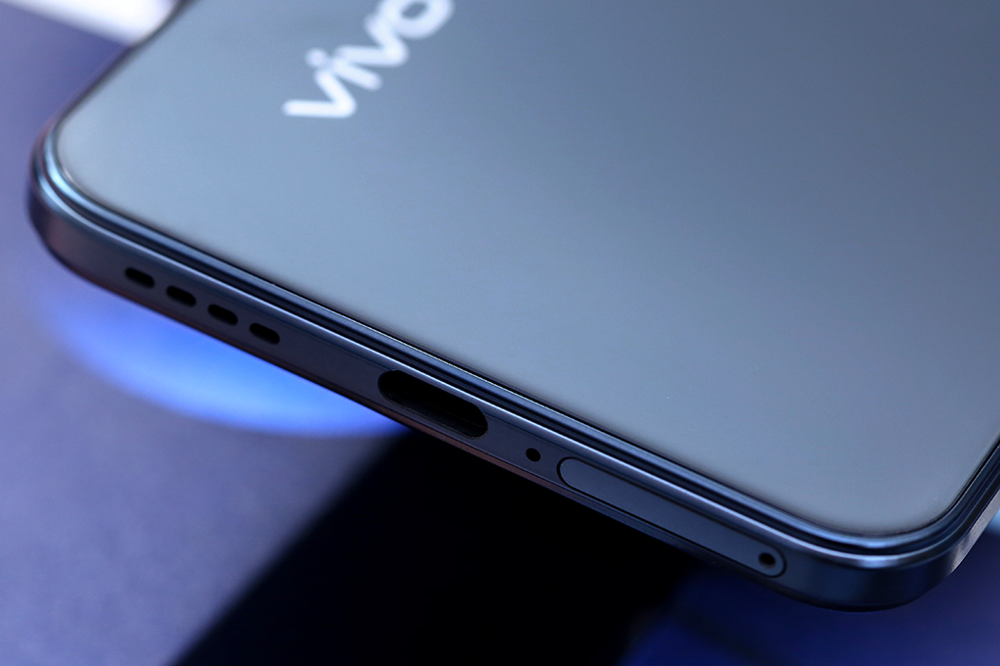
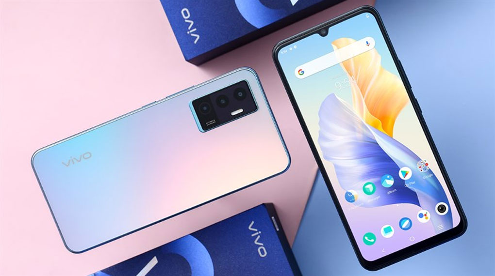
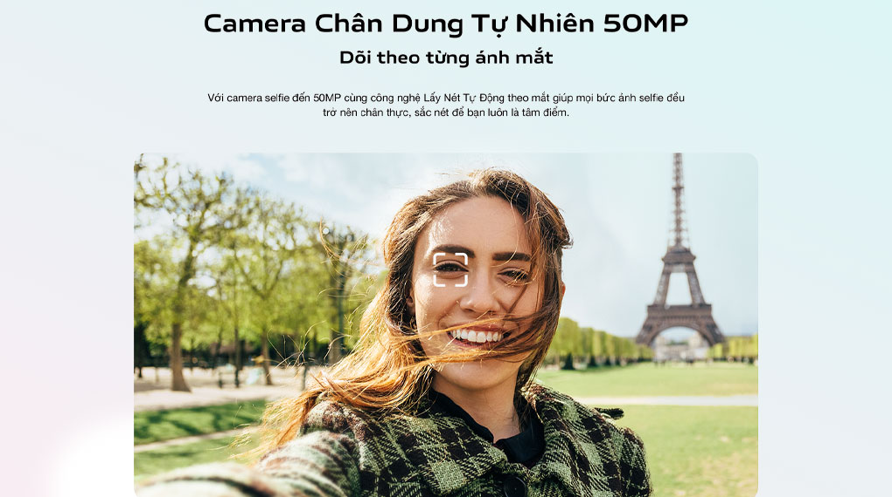
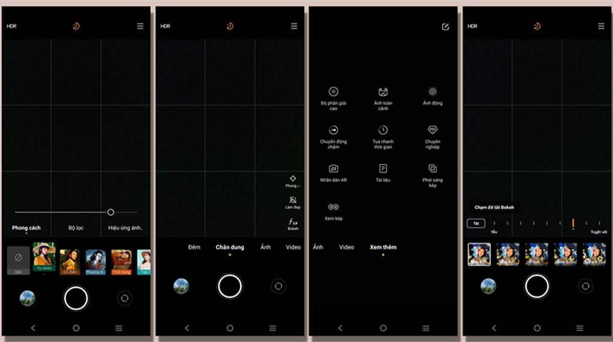
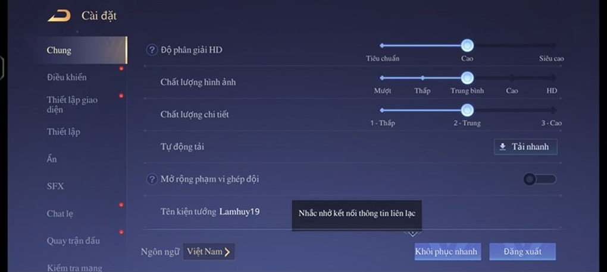

Điện thoại Vivo V23e
Vivo V23e - sản phẩm tầm trung được đầu tư lớn về khả năng selfie cùng ngoại hình mỏng nhẹ, bên cạnh thiết kế vuông vức theo xu hướng hiện tại thì V23e còn có hiệu năng tốt và một viên pin có khả năng sạc cực nhanh.
Thiết kế mỏng nhẹ cùng màu sắc tinh tế
Vivo V23e vẫn giữ đặc điểm nổi bật của Vivo V Series với thiết kế mỏng 7.36 mm ấn tượng (ở phiên bản màu đen). Viền màn hình 2 cạnh bên có độ mỏng ở mức vừa phải, tuy nhiên thì phần cạnh dưới thì có dày hơn một chút.
Phần khung cũng được vát phẳng và hoàn thiện từ nhựa nhưng khi chạm vào bạn sẽ khó phân biệt được đây là chất liệu gì, bởi nó được xử lý bằng một lớp phủ siêu mịn mang lại cảm giác tương tự như các sản phẩm được hoàn thiện từ khung kim loại.
Phiên bản màu đen có mặt lưng phẳng với hiệu ứng tráng gương khi sử dụng sẽ gặp tình trạng bị bám dấu vân tay, màu xanh hồng được hoàn thiện bởi công nghệ Satin AG nên có khả năng hạn chế được tình trạng bám dấu vân tay.
Vivo V23e sẽ không trang bị jack 3.5 mm bởi thiết kế siêu mỏng, phím nguồn và tăng giảm âm lượng được đặt ở cạnh phải, cạnh trên có một micro phụ, cạnh dưới có khe cắm sim, mic thoại, cổng sạc cùng 1 loa ngoài. Khi mở khe sim bạn lưu ý bởi khe lấy sim và mic thoại được nằm gần nhau bạn có thể sẽ thao tác nhầm nếu không để ý.
Camera selfie độ phân giải cao
Vivo V23e sử dụng camera trước có độ phân giải lên đến 50 MP, đây là độ phân giải cao nhất trong ngành smartphone đến thời điểm hiện tại (11/2021).
Hỗ trợ tính năng Lấy Nét Tự Động Theo Mắt cho giúp quá trình selfie trở nên dễ dàng và rõ ràng, cùng với tính năng Video Selfie Ổn Định Khuôn Mặt giúp khóa nét gương mặt của bạn và giữ cho chủ thể trong khung hình luôn ổn định.
Camera trước vẫn có thể làm đẹp cho bạn khi gọi video qua các ứng dụng bên thứ ba như Messenger, Zalo. Bạn có thể điều chỉnh được phần trăm ảnh hưởng của khả năng làm đẹp để phù hợp với nhu cầu sử dụng, điều này sẽ giúp bạn tự tin hơn trong lúc tán gẫu, làm việc.
Vivo V23e được trang bị ba camera gồm: Camera chính 64 MP, camera góc rộng 8 MP có thể chụp được những bức ảnh có góc nhìn 120 độ, cuối cùng là camera macro phân giải 2 MP. Với phần cứng này thì Vivo V23e cũng hỗ trợ khá nhiều chế độ chụp để cho bạn thoải mái sáng tạo.
Ở điều kiện đủ sáng, Vivo V23e cho ra ảnh với chi tiết khá, tái tạo màu sắc chân thực không quá rực rỡ mà làm mất đi vẻ đẹp tự nhiên của chủ thể. Camera chính có độ phân giải cao nên khi zoom ảnh thì tình trạng vỡ cũng được hạn chế ở mức tối đa.
Ảnh chụp trong điều kiện ngược sáng mang lại chi tiết tốt ở vùng sáng và tối, nhưng nếu zoom lên thì sẽ gặp tình trạng noise, với nhu cầu lưu trữ hình ảnh và chia sẻ lên mạng xã hội thì đây là vẫn một tấm ảnh chất lượng tốt.
Sử dụng chip của nhà MediaTek
Vivo V23e sử dụng chip Helio G96 cùng bộ nhớ RAM 8 GB + 4 GB RAM ảo nhờ công nghệ RAM Mở Rộng 2.0, như vậy là bạn sẽ có đến 12 GB RAM, thực tế trong quá trình sử dụng hằng ngày của mình thì mình thấy Vivo V23e không phải tải lại bất kỳ ứng dụng nào, thời gian phản hồi khi mình mở, chuyển đổi các ứng dụng đa nhiệm cũng rất nhanh.
CPU Helio G96 mang lại một trải nghiệm khá ổn, thời gian khởi chạy, hiệu ứng chuyển cảnh giữa các ứng dụng cũng rất nhanh chóng và dứt khoát.
Mình đã chơi Liên Quân trên Vivo V23e, máy có thể mở cấu hình đồ họa tối đa ở mức FPS 30 cho tựa game này, trải nghiệm chơi mượt ở bản đồ 5vs5 FPS luôn ổn định ở mức 30 không bị tụt sâu, nhưng để tốt ưu thời lượng pin và hiệu năng nhất thì bạn có thể đặt mức cấu hình trung bình.
Nhiệt độ của máy khi chơi game thì sẽ ấm dần sau khoảng 30 phút, nhiệt độ ở phần cạnh camera có phần cao hơn phần còn lại, nhiệt độ cũng được tản đều không dồn lại một bộ phận máy, với thiết kế mỏng và mặt lưng bằng kính thì thời gian tản nhiệt cũng khá nhanh.
Bộ nhớ trong của V23e là 128 GB, có hỗ mở rộng thông qua trợ thẻ nhớ MicroSD dung lượng đến 1 TB nên sẽ mang lại khả năng lưu trữ tốt, bạn sẽ không phải lo lắng nhiều về khả năng lưu trữ của máy.
Màn hình AMOLED thiên hướng rực rỡ
Sử dụng tấm nền AMOLED nên cho màu đen sâu, màu sắc thiên hướng rực rỡ cùng kích thước 6.44 inch, độ phân giải FullHD+ mang lại chất lượng hiển thị tốt.
Máy có tần số quét chỉ 60 Hz và vẫn sử dụng thiết kế màn hình giọt nước tương tự Vivo V21 5G, đây là điểm khá đáng tiếc ở phiên bản này, nhưng với thiết kế giọt nước thì ta có thể thông cảm bởi máy được trang bị camera selfie đến 50 MP siêu lớn.
Viên pin 4050 mAh cùng sạc nhanh 44 W
Cung cấp năng lượng cho Vivo V23e là viên pin 4050 mAh, đây không phải một viên pin quá lớn nhưng vì đây là sản phẩm mỏng nhẹ nên dung lượng này cũng là một con số vô cùng hợp lý, máy có trang bị công nghệ sạc nhanh 44 W, bạn chỉ cần sạc khoảng hơn 30 phút một chút thì đã có 70% pin.
Thời gian sử dụng thực tế của mình với Vivo V23e thì được khoảng từ 6 tiếng cho tác vụ tổng hợp như như: Kiểm tra mail, mạng xã hội, gọi video xem YouTube và chơi game Liên Quân Mobile, Genshin Impact.
Vivo V23e một sản phẩm tầm trung có thiết kế mỏng nhẹ, hiệu năng mạnh mẽ cùng với cụm camera nhiều tính năng, nếu bạn đang có nhu cầu nâng cấp sản phẩm thì đây là một chiếc điện thoại không nên bỏ qua